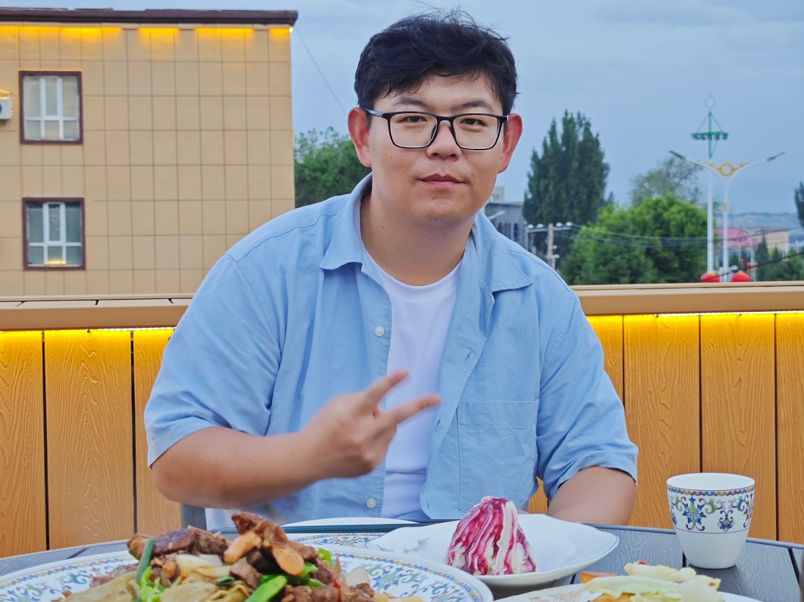

Personal academic website
Yu-Chen Sun （孙宇宸）
Senior Research Associate
I am a Senior Research Associate in the School of Mathematics at the University of Bristol.
My research lies in additive combinatorics, analytic number theory and ergodic theory, and the interactions between these areas.
I obtained my Ph.D. in Mathematics from the University of Turku in 2024, under the supervision of Kaisa Matomäki. I currently work with Ben Krause’s ergodic theory group in Bristol.
I also organise the Heilbronn Number Theory Seminar.
Recent preprints
All researchThe optimal scale in Linnik’s microsquare problem for almost all integers
with L. Zhao · arXiv:2609.13894
On the problem of large gcd for disjoint residue classes
with J. Fornal · arXiv:2607.24655
An improved upper bound on the Ruzsa number
with Y. Ding and L. Zhao · arXiv:2607.06167
Education
2020–2024
2016–2018
Master of Medicine (Clinical Medicine)
Supervisor: Decai Yu(余德才) · Nanjing Drum Tower Hospital
2011–2016
Bachelor of Medicine (Clinical Medicine)
Supervisor: Long Yi(易龙)
Minor in Financial Engineering
Informal supervisor in mathematics: Zhi-Wei Sun(孙智伟) · Nanjing University